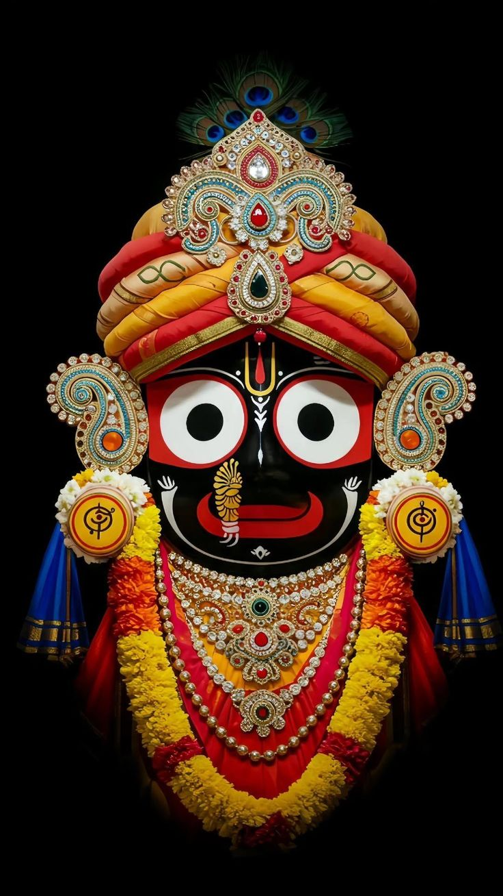

The Divine Trinity

Lord Balabhadra
Lord Balabhadra
The elder brother, embodiment of immense spiritual strength and profound wisdom.
Symbolism: Cosmic power & agriculture.
Role in Rath Yatra: Leads the grand procession on his magnificent green and red chariot, Taladhwaja.

Lord Jagannath
Lord Jagannath
The Supreme Lord of the Universe, bearing large, compassionate, and unblinking eyes.
Symbolism: Infinite love & supreme consciousness.
Role in Rath Yatra: The cosmic focal point, riding the colossal yellow and red chariot, Nandighosa.

Devi Subhadra
Devi Subhadra
The beloved sister, a source of boundless auspiciousness, harmony, and cosmic energy.
Symbolism: Pure devotion & compassion.
Role in Rath Yatra: Bridges the brothers on her graceful black and red chariot, Darpadalana.